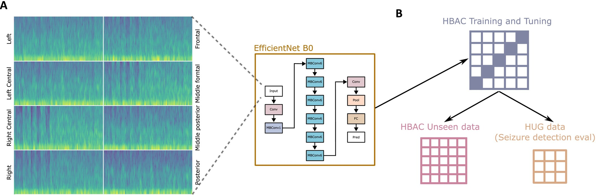
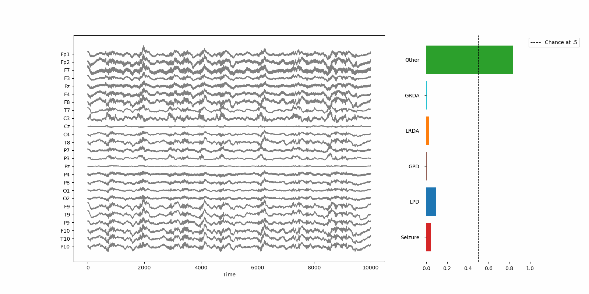

Project
ICU-EEG Pattern Detection
Read the publicationThe goal of this project was to assess the performance of a lightweight CNN for the detection of abnormal EEG patterns in critical care settings.
The Details
I will not go into many details regarding the training database and all the preprocessing steps, BUT a bunch of things are worth mentioning:
- The CNN was trained on 19 channelsThis can be tecnically reduced... but will require a retraining. It's on a to do list so that it can be easily applied to the standard 10-20 EEG montage used in ICUs.
- Six different patterns were included in the training (LPD, GPD, GRDA, LRDA, seizures and other) and the network was trained to output a probability for 50s windowsa simple sliding window can be used to increase temporal resolution... given that you know you will induce quite some autocorrelation ofc of EEG.
- The code is ready on GitHub but for hospital reasons I can only share it after a email request.
- Chunks of ideas were developed from the work of Chris Deotte.

The above figure shows that the input images were a concatenation of the spectrograms of the chains including transverse and double banana montagesto see some details look here. Then a simple normalization was addedd and finally all was plugged in the CNN. The performance obtained was pretty decent cosidering the numbers of paramters of the EffNetB0. we got AUROC score of 93.52 (94.18, 92.86)% for SZ, 91.48 (92.19, 90.77)% for LPD, 93.67 (94.31, 93.02)% for GPD, 87.00 (87.93, 86.06)% for LRDA, 89.15 (89.89, 88.42)% for GRDA, and 88.16 (88.83, 87.49)% for other. The score for the AUPR was instead of 83.62 (84.96, 82.28)% for SZ, 73.94 (75.79, 72.10)% for LPD, 72.50 (74.59, 70.41)% for GPD, 29.36 (31.26, 27.46)% for LRDA, 52.58 (55.02, 50.15)% for GRDA, and 78.71 (79.92, 77.50)% for other. BUT... what was remarcably good was the consistency in terms of temporal resolution. As mentioned before you can add a sliding window of choice while keeping a fixed windows of 50s for the prediction and the CNN was performing quite well at detecting onsets of seizures even if the trining was basically done on only static frames. I think the main reason for this is the fact the DB is quite good in terms of SNR, especially for the instances that have at least 20 annotations. Anyway, this is a very good news for the future of this kind of models... especially if one is interested in low-power/low-resource devices.

